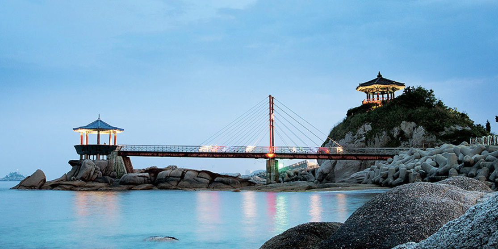
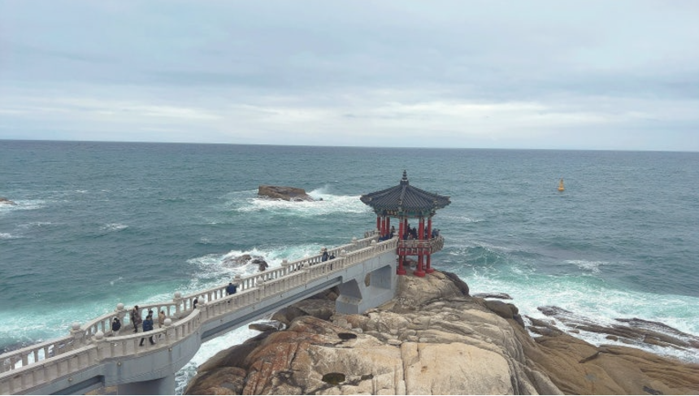
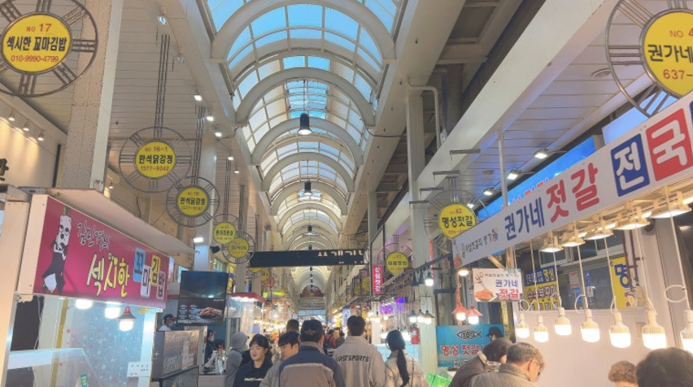
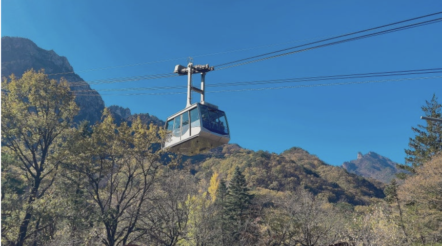
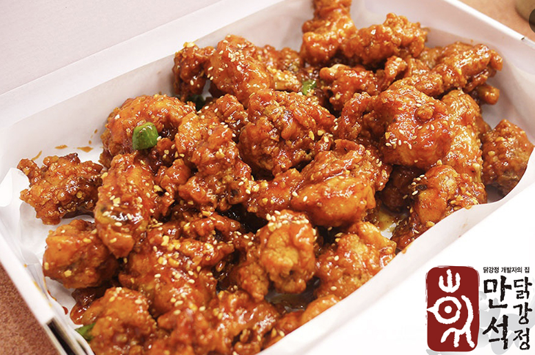
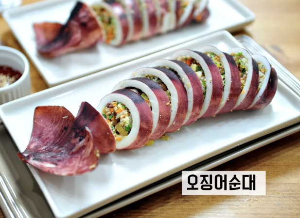
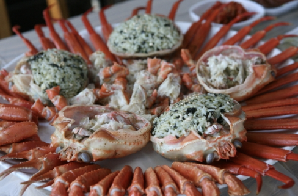

1. 속초에 대하여
강원특별자치도 동해안에 있는 시로 동쪽은 동해와 접하고 서쪽은 설악산을 두고 있다. 대표적인 국내 여행지 중 한 곳으로 관광사업이 발달해 있다. 대한민국의 대표적인 산인 설악산이 있고 동쪽에는 백사장이 깔려 있으며 여름은 서늘하고 겨울은 온화해 사계절 관광객을 볼 수 있다. 1999년 속초에서 진행된 1999강원국제관광엑스포의 개최를 기념하며 시민들의 공모로 의해 선정된 대표적인 경관 8곳이 있는데, 이곳을 속초팔경이라고 한다.
2. 속초 여행 계획
서울역 기준으로 속초까지 자동차로 2시간 30분이 걸린다. 서울에서 양양고속도로와 동해 고속도로만 거치면 도착할 수 있다. 보통 속초 한곳만 여행하기보다는 속초 근처의 강릉이나 고성을 함께 여행하는 경우가 많다. 개인 차량이 있다면 곳곳의 관광지들을 20분내외로 다닐 수 있어서 중간부분에 숙소를 두고 왔다갔다하는것을 추천한다.
3.속초에 가면 방문해야할 장소들
1. 영금정
속초 등대 아래에 아주 큰 바위가 있는 곳이 있는데, 이곳이 바로 영금정이 있는 곳이다. 파도가 바위에 부딪치는 소리가 마치 거문고 소리 같다고 해서 영금정이라는 이름이 붙었다. 탁 트인 바다를 정자 전망대에서도 (엘리베이터도 있다) 감상할 수 있고 특히 야경 스팟으로도 유명한 곳이라서 많은 관광객이 들리는 곳이다.
2. 속초관광수산시장
속초에 가면 반드시 들러야 하는 곳이라고 알려진 수산시장이다. 엄청 유명한 만삭닭강정과 코끼리분식도 있고 수산시장이지만 속초 이름을 딴 맥주나 빵 등 여러 먹을거리를 판다. 매번 대형마트만 가는 우리들인데, 시장의 열기와 정을 느끼는 경험을 하길 바란다.(참고로 시장에서 15000이상 구매하면 30분 주차 할인권을 받을 수 있다 !)
3. 속초 설악 케이블카
설악산을 보고 싶지만 오르기는 싫은 당신을 위해 준비했다 !. 설악 케이블카는 5분만에 설악산의 절경과 능선, 유명한 울산바위를 볼 수 있다. 케이블카에서 내려 10분만 길을 따라 가면 설악산 정상을 오를 수 있다. 정상이라고 불리는 권금성 봉화대에서는 멋진 절벽과 바위, 외설악, 내설악 경치를 감상할 수 있고 속초 시내와 바다 풍경이 한눈에 들어온다. (설악 케이블카 입장 시 문화재구역 입장료가 사려졌기 때문에 이용료만 내면 된다.)
4. 속초 먹을거리
1. 닭강정
위에서 추천한 수산시장 안에 위치한 만석닭강정 본점은 항상 웨이팅이 길다. 이 닭강정은 한 파워 블로거가 알렸고, 방송을 타며 유명세를 탔다. 다른 닭강정과 다른 점은 튀김기계를 사용하는 것이 아닌 가마솥을 이용한다는 점이다. 만석닭강정이 유명해지면서 다른 닭강정집도 유명해졌고, 그렇게 속초하면 닭강정이라는 이미지가 굳어져갔다. 속초까지 갔다면 늘 먹는 치킨보다는 달콤매콤한 닭강정을 먹어보는 것은 어떨까 ?
2. 오징어순대
닭강정 이전에, 속초를 대표하는 첫번째 음식인 오징어순대이다. 속초에서 횟집을 운영하던 사람이 오징어가 풍년이던 시절에 야채와 당면 등을 넣고 쩌내서 대접한 것에서 유래한 것으로 보인다. 오징어의 몸통에 찹쌀과 다진 오징어, 채소, 당면을 넣어서 쩌내는 방식으로 만드는데, 요즈음에는 쩌내는 것이 아닌 계란옷을 입혀서 부쳐내는 방식도 생겨났다고 한다. 속초에서 탄생한 의미있는 음식인 오징어순대를 꼭 먹어보길 바란다.
3. 홍게
속초에서 멀지 않은 곳에 있는 동명항는 홍게잡이 배가 드나든다. 국내 홍게 생산량 가운데 40%를 차지하고 있는 속초는 그만큼 홍게의 품질도 좋고 홍게를 이용한 요리도 발달했다. 홍게찜, 홍게탕, 딱지밥, 홍게라면, 홍게 칼국수 등 여러 요리들도 맛있지만 그냥 살만 먹어도 아주 맛있다.